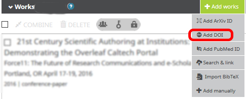
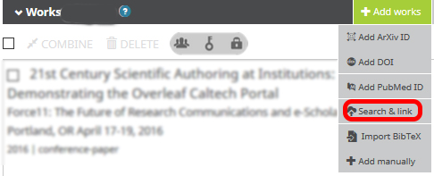
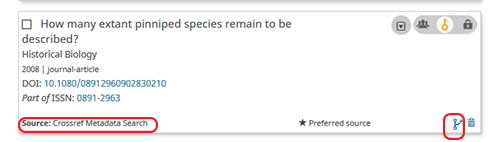
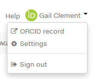
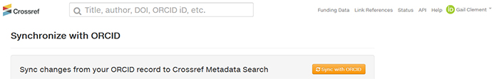
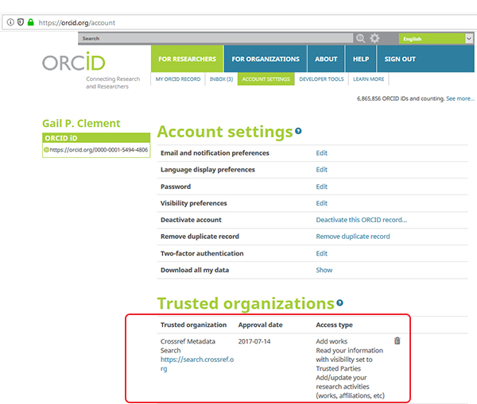
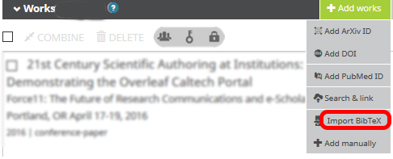
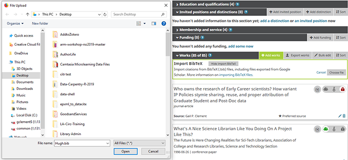

30 Minutes
In the ‘Works’ section of your ORCID profile, click on the Tab ‘+ Add Works’ and select the option ‘Add DOI’, as illustrated below:

A dialog box will display for ‘ADD WORK’, as illustrated below. In the blank text box,
enter the DOI for the work you wish to add. The illustration below shows how to add a paper
with the DOI 10.1016/j.cbpa.2009.04.470 but you are encouraged to add a DOI for your own work instead!

Click on the blue button ‘Retrieve work details’ and a metadata form will display with details populated from the DOI record. Leave the form as is; scroll to the bottom to set the privacy to ‘Trusted’, and click ‘Add to list’.

Back in your ORCID profile, refresh the ‘Works’ section by clicking on the ‘Sort’ button and select ‘Sort by Title’. Now look on the screen to view the work you just added.
Note that at the bottom of this record in your ORCID ‘Works’ list, the ‘Source:’ is credited to your name. Because this record was added by you, you may edit this record to your heart’s content. In the bottom right corner of the record, click on the pencil icon to open up the record for editing. When the metadata template opens up, you may change a field or add data to an empty field.
For this record, add a few words to the ‘Description’ field (for example, type “This is my paper” ). Save and close the record.
You have complete control over what shows up in your ORCID record. You can delete the entry by clicking the trach icon.
In the ‘Works’ section of the ORCID profile, click on the Tab ‘+ Add Works’. Select the option ‘Search & link; a long list of searchable databases will display, as the illustration below shows.

Scroll to the link for “CrossRef Metadata Search”.
The link takes you to the database for the CrossRef DOI Registration agency, while you are still logged into your ORCID account (see your name and the ORCID logo in the top right corner of the screen). Most publishers use CrossRef to register DOIs for their articles, book chapters, and proceedings.
In the search box at the top of the screen, enter the title for a work you wish to add to your ORCID (searching by name usually doesn’t work that well). If you need something to search for, try the title “How many extant pinniped species remain to be described?”, as illustrated below.

Note that in the bottom right corner of the CrossRef record appears a little ORCID logo next to ‘ADD TO ORCID’. Click this link to copy the record into your ORCID profile. You will be prompted to confirm that you wish to add this record to ORCID; click ‘YES’.

Refresh your ORCID profile again, sort your ‘Works’ by title, and find the record you just added from ‘Search & link’. Note that at the bottom of this record the ‘Source’ is displayed as ‘CrossRef Metadata Search’. Also note that you are not provided the pencil icon to edit this record. Instead, the icon in the bottom right corner is a ‘fork’ symbol – meaning you can make a copy of the record and edit the copy.

The CrossRef record is locked from editing because it is an authoritative data source. The records it supplies via ‘Search & link’ are authoritative, and the integration between ORCID and CrossRef is based on a trusted set of principles and business rules. Having ‘trusted’ data providers working with ORCID makes this system accurate and reliable!
Now we can authorize CrossRef to automatically update your ORCID profile to
automatically update whenever you publish a new work that has a CrossRef DOI!
And the publication metadata added to your ORCID will be accurate and authoritative.
Look for the ORCID icon and your name in the top right corner of the CrossRef screen, as shown below. Click on your name to display the drop-down menu.
Select ‘Settings’

Confirm you wish to synch by clicking the orange ‘Sync with ORCID’ button.

Return to your ORCID profile and click on ‘Account Settings’ at near the top of the screen. You will now see that have authorized CrossRef to update your ORCID profile as your new publications are released. You may revoke this permission anytime by clicking the delete button displayed on the right side of the CrossRef permission.

There is no universal coding format for scholarly citations: some systems use XML, others use JSON, and yet others use LaTeX and its bibliography syntax known as BibTeX. The ORCID system accepts BibTeX.
Caltech Library maintains publication records in our institutional repository for Caltech researchers. You can download a BibTex file of your publications by selecting your name at https://feeds.library.caltech.edu/people/ , going to the CaltechAUTHORS section, picking the type of content you want to add, and clicking BibTex.
In the ‘Works’ section of your record, click on ‘Add works’ select the option to upload a BibTeX file, as shown below.

An upload prompt will display, so browse to your desktop and select the BibTeX file you downloaded’.

Save the uploaded file by clicking on the little green icon that looks like either an old-fashioned computer disk or a hotel bed.

You can also get BibTeX files from reference managers like Zotero and publisher web sites.
Delete any works you added for testing that arn’t yours by using the delete trash can icon.
Previous: Getting Started with ORCID Next: ORCID Benefits